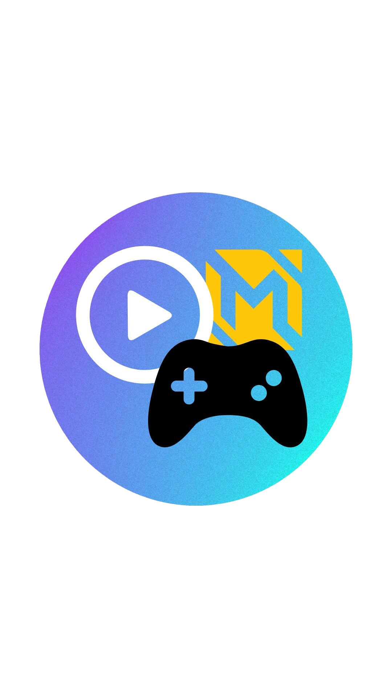

SUMMARY OF STREAM
This summary outlines the events and happenings during the live stream of our stream page, the
Late Gamerz Stream. The live stream, held on February 8, 2025, from 1:00 to 4:00 PM, mainly
focused on a gaming stream that played only one game: Mobile Legends: Bang Bang.
We played ranked matches at the start of our live and we were a complete 5-man team. We played the
first match using our main heroes. We also came up with a way to make playing ranked matches more
enjoyable by asking a viewer about some ways we can accomplish this. A viewer’s suggestion says
that we can challenge ourselves by using the spin the wheel and by that, we generate the idea
that the wheel will contain team roles and we will assign each person to each spin and whatever
it hits will be their role for the next matches.
At the last agenda of our stream, we invited the other group, the CtrlAltWin, to have a one-match
scrimmage with us since the other group will also play MLBB on their live stream. We played a
5v5 match in a draft pick mode so we can have bannings. At the end of the game, we had a good fight
with the other group and won the scrimmage. In that way, the live stream was properly transitioned
to our last part of the stream which is having a short goodbye and thank you message to the viewers
who watched and supported us until the end.
